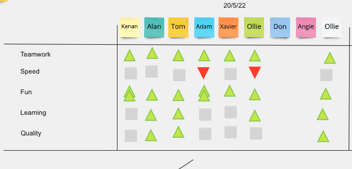
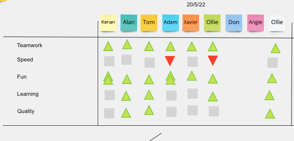

flex has a shorthand, e.g. flex: 1 0 auto, which means (max: how do I want to grow)
(min: how do I want to shrink)(ideal size: how do I want it to behave)
1, 2, 3.. means what proportion should it grow or shrink to? 0 means don't just don't, e.g. don't shrink acording to content
To be clear, grow means add space to spread padding as I've asked in the proportions I've asked, if the total content is smaller than full row width.
shrink means reduce width of elements if we can (like simple text which can wrap, but not an image, say), again taking space away in the proportions asked for in order to reach the row width, if we can.
1, 2, 3.. means what proportion should it grow or shrink to? 0 means don't just don't, e.g. don't shrink acording to content
To be clear, grow means add space to spread padding as I've asked in the proportions I've asked, if the total content is smaller than full row width.
shrink means reduce width of elements if we can (like simple text which can wrap, but not an image, say), again taking space away in the proportions asked for in order to reach the row width, if we can.
Step 1: card on the left
Step 2: card on the right
header
overflow won't work, because I'm not setting the height and width to something specific
but then, since one element has a fixed width, flex adds padding to other element, unless I say don't grow.
overflow won't work, because I'm not setting the height and width to something specific
but then, since one element has a fixed width, flex adds padding to other element, unless I say don't grow.
left pannel
Flex won't initialise the width to anything, it needs to come from the content and then flex will adjust it as directed,
if it can - which for an image it cannot.
So, my scrolling box must provide its own width to start off with (otherwise it gets it from its content, ultimately the image).
Solution 1, set the width as a % of view width (vw). set it very small and let flex grow the width as required
Soltuion 2, set the width to 100% (of parent, but that must have width - or 100% ... and so on to top, else it gives up and uses content again) However, this means using explicit % widths instead of flex biases, compeletely overriding flex and making the CSS messier.
(Solution 3, not tried yet, is use grid instead of flex) 
So, my scrolling box must provide its own width to start off with (otherwise it gets it from its content, ultimately the image).
Solution 1, set the width as a % of view width (vw). set it very small and let flex grow the width as required
Soltuion 2, set the width to 100% (of parent, but that must have width - or 100% ... and so on to top, else it gives up and uses content again) However, this means using explicit % widths instead of flex biases, compeletely overriding flex and making the CSS messier.
(Solution 3, not tried yet, is use grid instead of flex) 